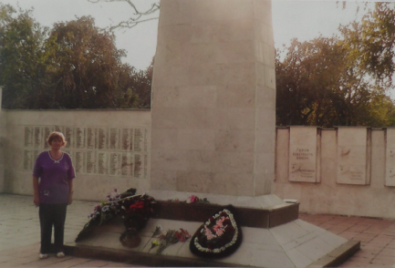
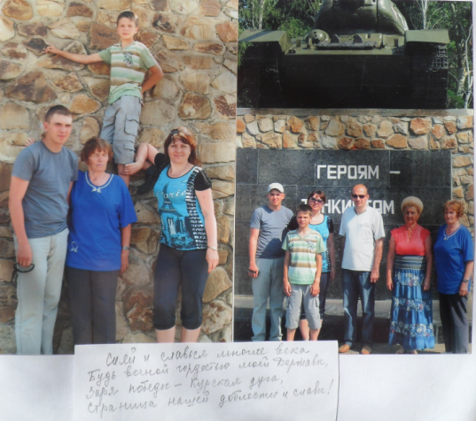

|
Около двух лет тому назад Фондом было установлено место гибели и захоронения отца тверитянки Канаевой Надежды Ивановны. Красноармеец 6-й гвардейской стрелковой дивизии КОРОТКОВ И.Д. погиб 7 июля 1943 г., на третий день Курской оборонительной операции.
Германское наступление началось утром 5 июля 1943 года. Поскольку советскому командованию было точно известно время начала операции - 3 часа ночи (немецкая армия воевала по Берлинскому времени — в переводе на московское 5 часов утра), в 22:30 и в 2:20 по московскому времени силами двух фронтов была проведена контрартподготовка количеством боеприпасов 0.25 боекомплекта. В немецких докладах отмечены значительные повреждения линий связи и незначительные потери в живой силе.
Перед началом наземной операции, в 6 часов утра по нашему времени, немцы также нанесли по советским оборонительным рубежам бомбовый и артиллерийский удар. Перешедшие в наступление танки сразу столкнулись с серьёзным сопротивлением. Главный удар на северном фасе был нанесен в направлении Ольховатки. Не достигнув успеха, немцы перенесли удар в направлении Понырей, но и здесь не смогли прорвать советскую оборону. Вермахт смог продвинуться лишь на 10—12 км, после чего уже с 10 июля потеряв до двух третей танков, 9-я немецкая армия перешла к обороне.
Иван Дмитриевич перезахоронен и увековечен в братской могиле в пос. Ольховатка Поныревского р-на Курской области. В июле 2012 г. мы связались с районной администрацией и попросили её сотрудников встретить и сопроводить Надежду Ивановну на это воинское захоронение. Так дочь впервые побывала на могиле своего отца-солдата. А вчера она пришла к нам и рассказала о поездке:
«Война не обошла в России ни одну семью, у каждой из них своя история, своя боль, свои воспоминания. Военное детство. Прошедшие десятилетия не смогли притупить в памяти чувство постоянной опасности и страха от бомбежек, разрывов снарядов и мин. Едва ли не каждый день вспоминаешь постоянный голод, не посильную для детских рук работу, тревогу за тех, кто на фронте. Больше всего не хочу, чтобы что-то подобное пришлось испытать моим детям и внукам.
Почти семьдесят лет прошло с тех пор как погиб самый близкий наш человек и всё это время не доводилось по разным причинам побывать на его могиле. Только 7 июля прошло года, в день гибели нашего отца, деда и прадеда мы поклонились его праху. В этом воинском захоронении лежат останки 1113 воинов – участников Курской битвы. В самом районном центре Поныри одиннадцать воинских памятников, установленных в честь героев одного из решающих сражений Великой Отечественной войны.
Не описать какие чувства я испытала, какие силы меня поддержали в эти минуты. На душе было светло и радостно. Я выполнила свой долг перед памятью отца, смогла прикоснуться к земле, в которой лежат его останки. И я обязательно вернусь в те места на 70-летие освобождения пос. Поныри от немецко-фашистских захватчиков 23 августа 2013 г. Это место на Земле теперь для меня как родное».
   |